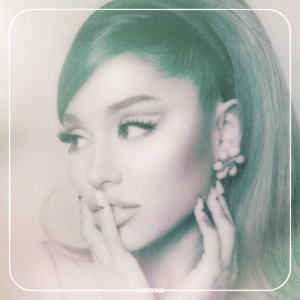

Meus Artistas Mais Ouvidos em 2020
Top 10 das Músicas mais ouvidas por Mim
Now United (estilizado como NOW UNITED) é um grupo global de música pop formado em 2017. Criado por Simon Fuller e gerenciado pela XIX Entertainment, teve sua primeira formação escolhida mediante processos de seleção. O grupo, até então, é formado por dezessete integrantes. O grupo fez sua primeira aparição em 5 de dezembro de 2017, com o lançamento do primeiro single, "Summer In The City", como parte do Al Gore’s 24 Hours of Reality, uma transmissão global cujo intuito é trabalhar para aumentar a conscientização em torno da crise climática global. "Summer In The City" é uma versão em inglês do clássico sueco dos anos 1990 "Sommaren i City", do girl group Angel. A canção foi composta por Jakke Erixson, Mika Guillory, Justin Tranter e RedOne, sendo produzida pelo último. Biografia do Now United

Top 10 das Músicas mais ouvidas por Mim
Ariana Grande-Butera (Boca Raton, 26 de junho de 1993), conhecida profissionalmente como Ariana Grande, é uma cantora, atriz, compositora e apresentadora estadunidense. Em seis anos de carreira solo, ela venceu um Grammy em um total de onze indicações.Grande fez sua estreia em 2008, atuando como Charlotte em 13 na Broadway. Entre 2010 e 2013, interpretou Cat Valentine na série Victorious, da Nickelodeon, e reprisou esse papel no spin-off Sam & Cat. Ela também atuou em outros papéis no teatro e na televisão e emprestou sua voz para programas de televisão e filmes animados. Conheça Biografia a de Ariana Grande

Top 10 das Músicas mais ouvidas por Mim
Harry Edward Styles (Redditch, 1 de fevereiro de 1994), é um cantor, compositor e ator inglês. Sua carreira musical começou em 2010 como um concorrente solo na série de competição musical britânica The X Factor. Após sua eliminação no início, ele foi trazido de volta para se juntar à boy band One Direction, que passou a se tornar um das boy bands recordistas em vendas. Conheça Biografia de Harry Styles
Top 10 das Músicas mais ouvidas por Mim
Justin Drew Bieber (London, Ontário, Canadá, 1 de março de 1994) é um cantor, compositor, e ator canadense. Em 2007, seus vídeos de apresentações covers foram vistas no YouTube por Scooter Braun, que tornou seu agente e o levou para a cidade de Atlanta (Geórgia), para reunir-se com o cantor Usher. Em seguida Bieber assinou contrato com a Island Records, iniciando carreira profissional em 2009, após concluir o primeiro grau escolar. Connheça a Biografia de Justin Bibier
Minha Playlist
| Animation | Banho |
|---|---|
| God is a Woman | |
| One Love | Adore You |
| Come Together | Holy |
| Dangerous Woman | |
| Yummy | Watermelon Sugar |
| Moster | |
| Habibi | Nobody fool me Twice |
| THank U, Next | |
| Into You | Lonely |
| Who thing that love | Somebody Else |
| Na Na Na | Cherry |
| Legends | |
| Positions | |
| Pov | |